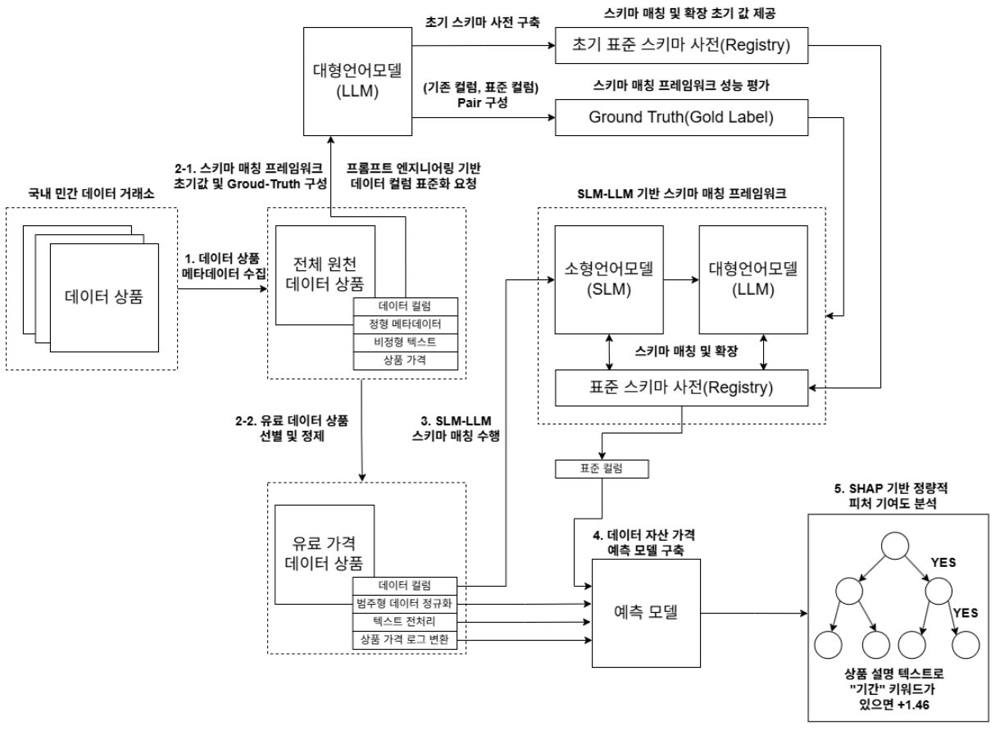
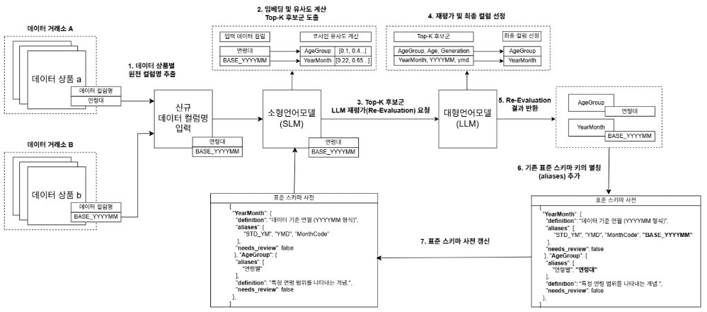
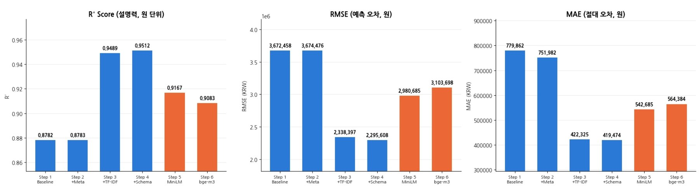
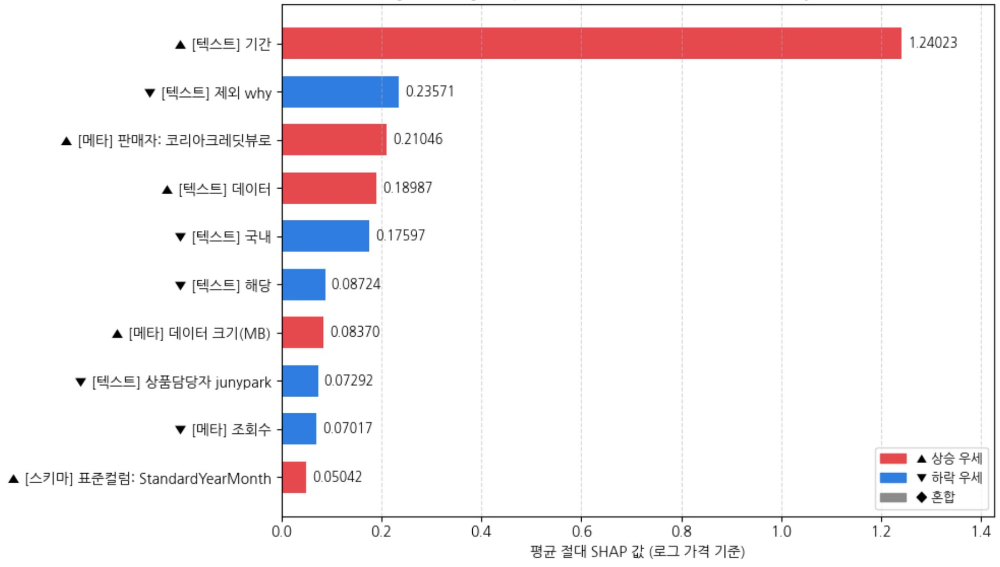
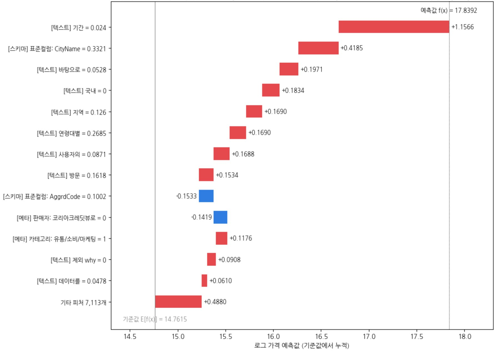
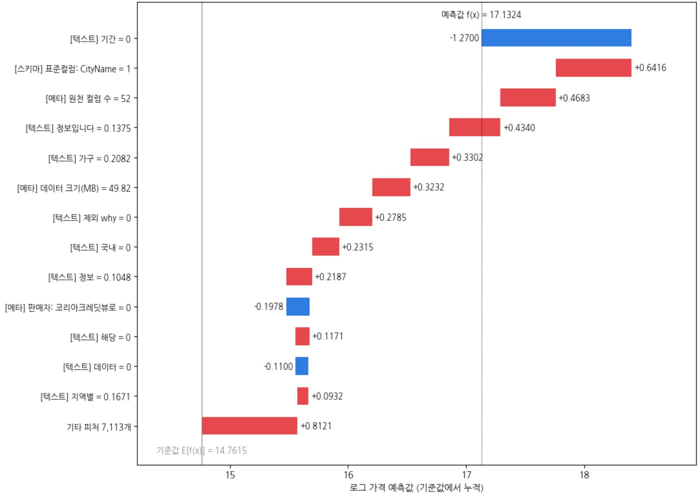
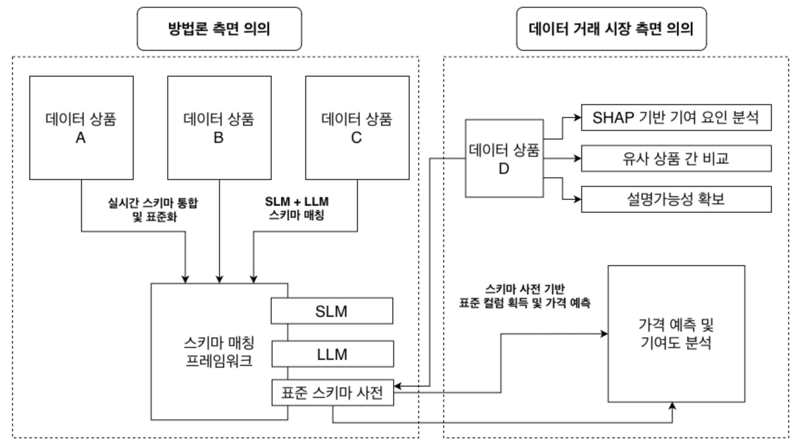

A Study on Data Asset Price Prediction and Valuation Using SLM-LLM based Schema Matching and Explainable Artificial Intelligence
이 페이지는 학위논문 심사위원께서 논문의 전체 흐름을 빠르게 파악하시도록 정리한 요약입니다. 수치와 표 번호는 2026년 11월 22일 자 논문 PDF를 따릅니다.데이터 거래소의 데이터 상품 컬럼을 언어모델로 표준 스키마로 정규화하고, 이를 포함한 메타데이터로 가격을 예측한 뒤, 예측 근거를 SHAP으로 설명하는 통합 프레임워크를 제안했습니다.
수집 11,028건 중 유료 데이터 상품
원천 컬럼 1,519개
SLM 단독 Recall@1 0.2133 대비
LLM 재평가로 교정 59.3%
MAE 419,474원
베이스라인 대비 MAE 46.2% 감소
평균 |SHAP| · 2위의 5배 이상
텍스트가 전체 기여의 81.5%
1–3장에서 문제와 설계를 세우고, 4·5·6장이 세 연구 문제(RQ1–3)에 하나씩 답한 뒤 7장에서 정리합니다. 각 카드의 링크는 PDF의 해당 장으로 이동합니다.
PDF 이동 링크는 브라우저 내장 PDF 뷰어 기준이며, 일부 환경에서는 첫 페이지가 열릴 수 있습니다. 쪽 번호는 논문 본문 쪽수입니다.
데이터 자산은 거래소에서 데이터 상품(상품명·판매자·카테고리·형식·크기·설명·컬럼 목록·가격)이라는 거래 단위로 유통됩니다. 본 연구는 이 데이터 상품을 분석 대상으로 삼았습니다.
판매자는 생성 과정·품질 관리를 알지만, 구매자는 공개된 메타데이터와 일부 샘플로만 판단해야 합니다. 제시 가격이 적정한지 비교할 참고 정보가 필요합니다.
같은 의미가 기준년월·BASE_YYMM·승인년월처럼 다르게 표기되고, 이용금액_202401·이용금액_202001처럼 비슷한 문자열이 다른 의미를 갖습니다. 상품 간 구조 비교가 어렵습니다.
기계학습으로 가격을 예측하더라도 근거를 설명하지 못하면 실제 거래와 가치평가 과정에서 활용하기 어렵습니다.
독립된 세 실험이 아니라, 앞 단계의 산출물이 다음 단계의 입력이 되는 순차 구조입니다.
SLM 후보 탐색과 LLM 재평가를 결합한 매칭은 이질적인 원천 컬럼을 표준 스키마로 얼마나 잘 정규화하는가?
정형 메타데이터 · 비정형 상품 설명 · 표준 스키마를 단계적으로 추가하면 예측 성능은 어떻게 달라지는가?
각 피처는 예측 가격에 어떤 방향·크기로 기여하며, 이 설명은 가치평가에 어떻게 활용될 수 있는가?
| 구분 | 기존 연구 | 본 연구 |
|---|---|---|
| 대상 | 도메인별 개별 데이터셋 | 데이터 거래소의 데이터 상품 |
| 스키마 매칭 | 문자열 · 임베딩 · LLM 단일 방식, 통합·상호운용 목적 | SLM 후보 탐색 + LLM 재평가, 결과를 가격 예측 피처로 활용 |
| 가격 예측 | 정형·비정형 중심, 최종 성능 보고 | 정형 + 비정형 + 표준 스키마를 단계별로 비교 |
| 가치평가 연계 | 예측값 단위 활용 | 예측 + SHAP 근거를 가치평가 참고자료로 제시 |
데이터 수집 → 전처리·기준 구축 → SLM-LLM 스키마 매칭 → 가격 예측 → SHAP 분석의 다섯 단계로 구성됩니다.

[표 3-1] 분석 단계별 산출물 및 평가 기준 (요약)
| 단계 | 산출물 | 평가 기준 |
|---|---|---|
| ① 데이터 수집 | 11,028건 → 유료 1,985건 | 수집·유료 상품 건수 |
| ② 전처리 · 기준 구축 | 메타데이터 3유형, 초기 사전 1,059키 | 결측 · 표기 일관성 |
| ③ 스키마 매칭 (RQ1) | 표준 스키마 사전 | Recall@K, MRR, Accuracy |
| ④ 가격 예측 (RQ2) | 가격 예측 모델 | MAE, RMSE, R² |
| ⑤ SHAP (RQ3) | 가격 결정 요인 해석 | 주요 기여 피처, 상품별 해석 |
국내 민간 데이터 거래소 공개 웹페이지(2025년 8월), 상품당 17개 필드, JSONL 저장. 숫자형 가격이 0원 초과인 유료 상품 1,985건을 가격 예측 대상으로 사용했습니다. 범위·협의 가격은 단일 금액으로 해석할 수 없어 제외했습니다.
가격은 꼬리가 길고 여러 가격대에 몰린 분포여서 log(1+가격)으로 학습하고, 예측값을 원 단위로 역변환해 평가했습니다. 컬럼명은 전체 66,267개 → 고유 1,528개 → 정제 후 1,519개입니다.
탐색은 SLM(임베딩·코사인 유사도 Top-K)이, 판단은 LLM(기존 키에 통합 / 신규 키 생성)이 맡습니다. 새 컬럼이 들어올 때마다 사전과 임베딩이 갱신되는 확장형 지식베이스 구조입니다.

SLM 단독으로 최종 매칭을 확정하기는 어렵지만, 정답 키를 후보군에 포함시키는 1차 탐색기로 기능합니다.
둘 다 정답(0.2014) + LLM 교정(0.5932) = Accuracy 0.7946
기준 매핑값(Ground Truth)과 초기 사전을 LLM으로 생성했으므로, 0.7946은 사람이 만든 정답셋 대비 절대 정확도가 아니라 LLM 기준값 대비 정합률로 해석합니다(4.5.5절, 7.3절).
실험 A에서 알고리즘을 선정하고(70/15/15 홀드아웃), 실험 B에서 XGBoost와 하이퍼파라미터를 고정한 채 입력 피처만 바꿔 6단계로 비교했습니다(카테고리 층화 5-Fold × 3회 반복, 15개 폴드 평균).
[표 5-2] 알고리즘별 홀드아웃 테스트 성능
| 모델 | MAE(log) | R²(log) | MAE(원) | RMSE(원) |
|---|---|---|---|---|
| Ridge | 0.3303 | 0.9324 | 5,747,132 | 68,649,049 |
| LightGBM | 0.1600 | 0.9684 | 961,795 | 4,791,535 |
| XGBoost | 0.1148 | 0.9672 | 629,395 | 4,266,966 |
LightGBM이 로그 RMSE·R²에서 근소하게 앞섰지만, 원 단위 MAE가 가장 낮고 트리 기반 SHAP과 바로 연결되는 XGBoost를 최종 알고리즘으로 선정했습니다. Ridge는 로그 R² 0.93이지만 역변환 시 고가 상품 오차가 크게 확대됩니다.
[표 5-5] 피처 단계별 성능 (15개 폴드 평균)
| 단계 | 피처 구성 | MAE(원) | R² |
|---|---|---|---|
| Step 1 | 원본 메타 + 원천 스키마 | 779,862 | 0.8782 |
| Step 2 | 정규화 메타 + 원천 스키마 | 751,982 | 0.8783 |
| Step 3 | + 텍스트(TF-IDF) + 원천 스키마 | 422,325 | 0.9489 |
| Step 4 ★ | + 텍스트(TF-IDF) + 표준 스키마 | 419,474 | 0.9512 |
| Step 5 | 텍스트를 MiniLM으로 교체 | 542,685 | 0.9167 |
| Step 6 | 텍스트를 BGE-M3로 교체 | 564,384 | 0.9083 |

Step 3에서 MAE가 베이스라인 대비 45.8% 감소. 언제·어디서·누구를 대상으로 만든 데이터인지가 상품 설명에 담깁니다.
Step 4에서 MAE −0.7%, RMSE −1.8%, R² +0.0023. 폭은 작지만 세 지표 모두 개선되어 최종 모델로 선정했습니다.
기간·지역·업종 같은 특정 용어의 출현을 TF-IDF는 보존하지만, 임베딩은 문장 의미로 압축하며 구분력이 약해진 것으로 해석했습니다.
최종 모델(Step 4)에 SHAP을 적용했습니다. 모델이 log(1+가격)을 학습했으므로 SHAP 값도 로그 단위입니다. 예를 들어 +1.24는 “124만 원 상승”이 아니라 로그 가격이 1.24 상승했다는 뜻입니다.
[표 6-2] 평균 절대 SHAP 기준 상위 10개 피처 (유료 상품 1,985건)
▲ 상승 우세 · ▼ 하락 우세: 상품별 SHAP 값이 0보다 큰 비율이 60% 이상이면 상승 우세, 40% 이하면 하락 우세로 구분했습니다(6.2.1절).
[표 6-3] 피처 유형별 평균 절대 SHAP 기여도 (전체 7,126개 피처, 합계 3.570)
| 유형 | 피처 수 | 기여 비중 | 피처당 평균 |
|---|---|---|---|
| 비정형 텍스트 | 6,931 | 81.5% | 0.00042 |
| 정형 메타데이터 | 48 | 16.9% | 0.01255 |
| 표준 스키마 | 147 | 1.7% | 0.00040 |
총량은 텍스트가 가장 크고, 피처당 영향은 정형 메타데이터가 가장 큽니다. 표준 스키마는 기준년월(▲)·시도명(▼)처럼 시간·공간 구조를 전달하는 보완 역할을 합니다.
텍스트 1위 ‘기간’과 표준 스키마 최상위 ‘StandardYearMonth(기준년월)’가 모두 시간 정보입니다. 반면 조회수는 하락 우세로, 관심도가 높다고 비싸게 예측하지는 않았습니다.
실제 50,000,000원 → 예측 55,935,737원
실제 30,000,000원 → 예측 27,587,610원



SLM은 1차 탐색기, LLM은 2차 교정기. 역할 분담 구조가 유효하게 동작했으며, LLM 기준값 대비 정합률 0.7946을 기록했습니다(LLM 교정 비율 0.5932).
상품 설명 텍스트가 가장 크게, 표준 스키마가 추가로 개선. 최종 모델은 MAE 419,474원, RMSE 2,295,608원, R² 0.9512이며, TF-IDF가 Dense 임베딩보다 우수했습니다.
‘기간’이 최대 기여 피처, 텍스트가 기여의 81.5%. 개별 예측은 여러 피처의 상승·하락 기여가 결합되어 형성되며, SHAP으로 상품 단위 근거를 제시할 수 있습니다.

컬럼 표준화 결과를 가격 예측 피처로 직접 활용하고, SHAP 설명까지 하나의 절차로 연결했습니다.
가격 수준과 그 근거를 함께 제시해 판매자·구매자·거래소·평가 전문가의 가격 검토를 지원하는 정량적·정성적 정보를 제공합니다.
| 구분 | 한계 | 향후 연구 방향 |
|---|---|---|
| 데이터 범위 | 단일 거래소 · 특정 시점 · 1,985건 | 다른 거래소·시점, 신규 판매자·신규 상품으로 외부 검증 |
| 기준값 | 종속변수가 실제 체결가가 아닌 제시 가격 · 매칭 기준값이 LLM 생성 | 실제 거래가격 확보, 도메인 전문가 구축 정답셋으로 재평가 |
| 해석 범위 | SHAP은 인과가 아님 · 판매자·문구 패턴 학습 가능성 | 품질·권리·시장정보 결합, 판매자 제외 민감도 분석, 텍스트 정제 |